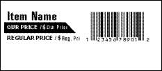
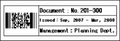
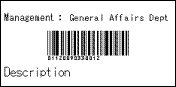

References the database record data, and prints a nameplate.


| NamePlt.mdb | Summary |
Microsoft® Access application for creating
nameplates. References the database record data, and prints a nameplate. |
| Methods used | Open(), GetTextIndex(), Text[Property], StartPrint(), PrintOut(), EndPrint(), Close() | |
| Operable development environment | Microsoft® Access 2000 | |
| Templates used | NamePlate1.lbx, NamePlate2.lbx | |
| Label image |
|
| ShopLbl.mdb | Summary |
Microsoft® Access application for creating barcode
labels. References the database record data, and then converts that data into a barcode. |
| Methods used | Open(), GetTextIndex(), Text[Property], StartPrint(), PrintOut(), EndPrint(), SetBarcodeData(), Close() | |
| Operable development environment | Microsoft® Access 2000 | |
| Templates used | Shop.lbx | |
| Label image |  |
| Asset2.xls | Summary |
Microsoft® Excel application for creating labels of
a chart. A two-dimensional barcode can be inserted. |
| Methods used |
Open(), Close(), GetObject(), Text[Property], StartPrint(), PrintOut(), EndPrint() | |
| Operable development environment | Microsoft® Excel 2003 | |
| Templates used | Asset2.lbx | |
| Label image |  |
| Address.xls | Summary |
Microsoft® Excel application for creating address
labels. References the database record data, and prints an address label. |
| Methods used |
Open(), Close(), GetObject(), Text[Property], StartPrint(), PrintOut(), EndPrint() | |
| Operable development environment | Microsoft® Excel 2003 | |
| Templates used | Address.lbx | |
| Label image |
| Asset1.xls | Summary |
Microsoft® Excel application for creating barcode
labels. Since it contains an area for a single line of text, an area for text of a variable length and an area for a barcode, the size of the label changes depending on the entered text. Therefore, use media in a portrait orientation. Small labels can be created by clearing the check box for the area for the variable length text. |
| Methods used |
Open(), Close(), GetObject(), Text[Property], StartPrint(), PrintOut(), EndPrint(), Export() | |
| Operable development environment | Microsoft® Excel 2003 | |
| Templates used | Asset1.lbx | |
| Label image |  |